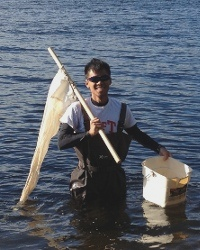

|  | Gavan LEONG Wai-KitHonours Student (Alumnus) |
Projects
For my honours project I am documenting the coastal fish community in three marinas of Singapore. Coastal development in Singapore for various purposes such as economic activity, seafront living and recreational activity has resulted in the drastic alteration of our natural coastal habitats. While extensive fish surveys are regularly performed in patch reefs surrounding Singapore, little is known about fish biodiversity in our marinas. My honours project aims to reveal what kind of fish biodiversity can our marinas support, as well as inter- and intra-marina spatial differences. The community structure will also potentially reflect the state of the habitat that they live in.
History and Research Interests
My passion for marine life really began in secondary school when a class trip to Pulau Tioman was organized. As we spent most of our time snorkelling there, it really opened my eyes to the myriad of marine life that exists, as well as the conservation issues that coral reef habitats are facing. I spent four months in the University of Toronto, Canada, under the joint minor programme in environmental biology where I was exposed to limnology, community and physiological ecology. During the summer of 2013, I also attended the module Field Studies in Biodiversity which took me back to Tioman, where we studied the behaviour and interactions of the bluestreak cleaner wrasse Labroides dimidiatus with other client reef fish. I aim to pursue a career that will keep me in the field of my passion!